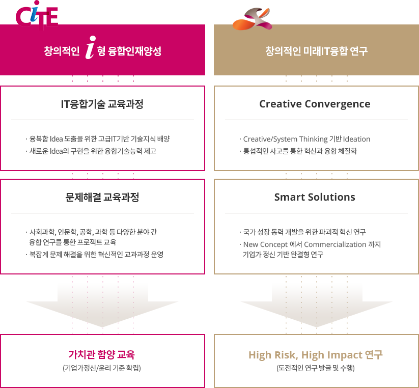
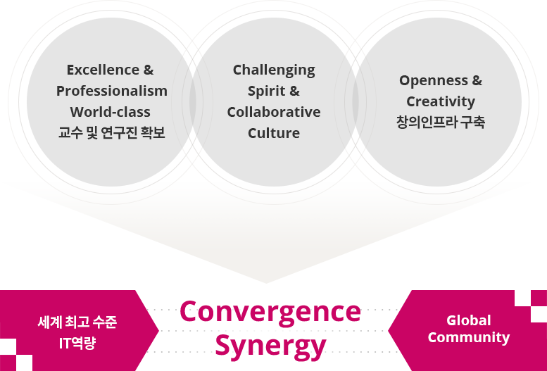

@@include('sub_visual.html',{
"title" : "학과개요",
"type" : "type1",
"sub_menu" : "소개"
})
학과소개
과학기술정보통신부에서 지원하는 ICT명품인재양성사업 수행을 통해 미래IT산업을 이끌어 나갈 창의인재의 양성과 함께
세계 최고 수준의 IT융합교육 기관으로 도약하는 것을 목표로 설립되었습니다.
추진방향

-
창의적인 i형 융합인재양성
- IT융합기술 교육과정
- 융복합 idea 도출을 위한 고급IT기반 기술지식 배양
- 새로운 idea의 구현을 위한 융합기술능력 제고
- 문제해결 교육과정
- 사회과학, 인문학, 공학, 과학 등 다양한 분야 간 융합 연구를 통한 프로젝트 교육
- 복잡한 문제 해결을 위한 혁신적인 교과과정 운영
가치관 함양교육(기업가정신/윤리 기준 확립)
-
창의적인 미래IT융합 연구
- Creative Convergence
- Creative/System Thinking 기반 Ideation
- 통섭적인 사고를 통한 혁신과 융합 체질화
- 문제해결 교육과정
- 국가 성장 동력 개발을 위한 파괴적 혁신 연구
- New Concept에서 Commercialization까지 기업가 정신 기반 완결형 연구
High Risk, High Impact 연구(도전적인 연구 발굴 및 수행)
지원체계

-
Excellence & Professionalism World-class 교수 및 연구진 확보
-
Challenging Spirit & Collaborative Culture
-
Openness & Creativity 창의인프라 구축
세계 최고 수준 IT 역량
Global Community
Convergence Synergy